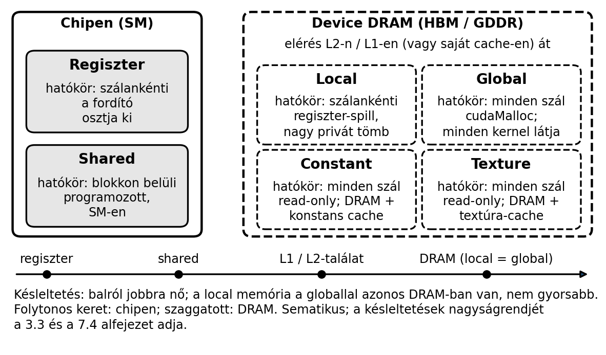

A CUDA programozási modellben a globális memória az a fő adattároló, amelyet a GPU minden szála elérhet. Ez a memória a GPU kártyán található DRAM-ban helyezkedik el, és a CPU oldali rendszermemóriától elkülönül. Amikor egy kernel párhuzamosan dolgozik fel adatokat, az adatok általában a globális memóriában vannak, ezért a globális memória helyes kezelése és a host–device közötti adatmozgatás alapvető fontosságú minden CUDA-program számára.
Ebben az alfejezetben a következőket tekintjük át:
cudaMalloc és
cudaMallocManaged függvényekkel;cudaMemcpy
segítségével;A fejezet nem ismétli meg a thread-, block- és gridmodell alapjait,
és nem tárgyalja a shared memory vagy más memóriaterek részleteit – azok
a következő egységben következnek. Feltételezzük, hogy az olvasó már
ismeri a kernelindítás szintaxisát és a __global__
függvények alapvető használatát.
Az alábbi ábra a memóriatereket hatókör (ki látja) és fizikai hely (chipen vagy a device DRAM-ban) szerint mutatja.

A CUDA memóriahierarchiájában a globális memória a legnagyobb kapacitású, de a leglassabb elérésű tárolószint. A GPU minden streaming multiprocesszora (SM) minden threadje hozzáférhet a globális memóriához, függetlenül attól, hogy melyik blokkban fut. Ez a közös láthatóság teszi lehetővé, hogy a kernelek nagy adathalmazokat dolgozzanak fel.
A globális memória főbb tulajdonságai:
cudaFree hívásig
létezik. Nem szűnik meg automatikusan a kernel visszatérésekor.A globális memóriát a host oldalról nem lehet közvetlenül elérni; a CPU csak a saját rendszermemóriáját látja. Ezért az adatokat a host és a device között explicit módon kell másolni, vagy egységes memóriát (unified memory) kell használni, amely ezt a másolást a háttérben kezeli.
cudaMalloc és cudaFreeA globális memória lefoglalására a cudaMalloc függvény
szolgál. Szignatúrája a következő:
cudaError_t cudaMalloc(void** devPtr, size_t size);A függvény az első paraméterben egy olyan pointer címét várja,
amelybe a lefoglalt device-mutatót írja. A második paraméter a kívánt
méret bájtban. A visszatérési érték cudaError_t, amelyet
mindig ellenőrizni kell.
Fontos, hogy a cudaMalloc által visszaadott mutató a
device memóriába mutat. Ezt a mutatót a host oldali kód
közvetlenül nem dereferálhatja (nem olvashatja vagy írhatja a memóriát),
csak átadhatja kerneleknek vagy memóriamásoló függvényeknek. A host és a
device mutatók közötti különbséget mindig szem előtt kell tartani.
A lefoglalt memória felszabadítására a cudaFree
szolgál:
cudaError_t cudaFree(void* devPtr);A cudaFree a korábban cudaMalloc-kal
lefoglalt device-memóriát szabadítja fel. Ha a program elmulasztja a
felszabadítást, az adott memóriaterület a CUDA-kontextus élettartamának
végéig lefoglalva marad, ami memóriaszivárgáshoz vezet.
Különösen hosszú futású vagy ismétlődő allokációkat végző programoknál
ez komoly problémát okozhat.
A cudaFree hívás után a mutató értéke nem lesz
automatikusan nullptr, ezért célszerű a mutatót nullára
állítani, ha később ellenőrizni szeretnénk. A cudaFree
implicit eszköz-szinkronizációt végez (megvárja az eszközön futó
munkát), ezért mérési és stream-es ciklusokban kerülendő; alternatívája
a stream-rendezett
cudaMallocAsync/cudaFreeAsync pár (CUDA
11.2+).
Kapcsolódó API-k, amelyeket e labor nem használ, de a gyakorlatban elengedhetetlenek:
cudaMemset(ptr, érték, bájtszám): a device-puffer
bájtonkénti feltöltése (pl. nullázás); a cudaMalloc nem
inicializálja a memóriát.cudaMalloc által visszaadott cím legalább
256 bájtra igazított.cudaMemGetInfo(&szabad, &összes): a szabad és
az összes device-memória lekérdezése.cudaMallocPitch: 2D-tömbök sorigazított foglalása (a
6.2 alfejezet csak hivatkozik rá).cudaMallocHost (page-locked, „pinned” host memória) és
cudaMemcpyAsync: a pinned memória nagyobb másolási
sávszélességet ad, és az aszinkron másolás előfeltétele; a streamekkel a
későbbi alfejezetek foglalkoznak.cudaMemcpyA globális memória és a host memória közötti adatmozgatásra a
cudaMemcpy függvényt használjuk. Alapértelmezésben ez a
függvény szinkron módon működik: a hívás blokkolja a host szálat, amíg a
másolás be nem fejeződik.
A függvény szignatúrája:
cudaError_t cudaMemcpy(void* dst, const void* src, size_t count, cudaMemcpyKind kind);dst: a célmemória címe (host vagy device pointer).src: a forrásmemória címe (host vagy device
pointer).count: a másolandó bájtok száma.kind: a másolás irányát jelző enumeráció. A
leggyakoribb értékek:
cudaMemcpyHostToDevice: host memóriából device globális
memóriába.cudaMemcpyDeviceToHost: device globális memóriából host
memóriába.cudaMemcpyDeviceToDevice: globális memórián belüli
másolás.cudaMemcpyDefault: egységes memória esetén automatikus
irányfelismerés.A cudaMemcpy hívás előtt mind a forrás-, mind a
célmemóriának érvényesnek és megfelelő méretűnek kell lennie. A
count nem haladhatja meg a lefoglalt pufferek méretét,
különben a viselkedés nem definiált, és a program összeomolhat vagy
hibás eredményt adhat.
Gyakori hiba, hogy a cudaMemcpyKind értékét rosszul
adjuk meg, például cudaMemcpyHostToDevice helyett
cudaMemcpyDeviceToHost-ot használunk. 64 bites (UVA-s)
rendszeren a runtime a mutatók tényleges helyét ismeri, ezért a
cudaMemcpy ilyenkor jellemzően
cudaErrorInvalidValue hibával meghiúsul, és nem másol;
ellenőrzés nélkül a program régi adatokkal fut tovább. UVA mellett a
cudaMemcpyDefault a mutatókból állapítja meg az irányt.
cudaMallocManagedA hagyományos cudaMalloc + cudaMemcpy
megközelítés mellett a CUDA támogatja az egységes
memóriát (unified memory) is. Az egységes memória lehetővé
teszi, hogy egyetlen mutatóval hivatkozzunk olyan adatra, amelyet a CPU
és a GPU egyaránt elérhet. A lefoglalás a cudaMallocManaged
függvénnyel történik:
cudaError_t cudaMallocManaged(void** devPtr, size_t size);A cudaMallocManaged által visszaadott mutató mind a
host, mind a device oldalon érvényes. A rendszer a háttérben
automatikusan kezeli az adatmozgatást: amikor a GPU hozzáfér az adathoz,
a szükséges lapok átkerülnek a device memóriába, majd vissza, ha a CPU
olvassa azokat. Ez a mechanizmus leegyszerűsíti a kódot, mert nincs
szükség explicit cudaMemcpy hívásokra.
Ugyanakkor az egységes memória használata nem mindig optimális: a
háttérben lejátszódó lapozás (page fault) többletköltséggel járhat,
különösen akkor, ha a CPU és a GPU gyakran, vegyesen éri el ugyanazt a
memóriaterületet. A teljesítmény javítása érdekében a CUDA biztosítja a
cudaMemPrefetchAsync függvényt, amellyel előre jelezhetjük,
melyik processzor fogja használni az adatot. A részletes optimalizálási
stratégiákat a későbbi fejezetek tárgyalják.
Az egységes memóriát ugyanúgy kell felszabadítani, mint a hagyományos
globális memóriát: cudaFree hívással. Egy rövid, teljes
vázlat (nem fordítottuk, nvcc-vel ellenőrizendő; a
CUDA_CHECK és a vectorAdd a labor definíciója
szerint):
// CUDA C++17 – vázlat, nem fordítottuk
float *a = nullptr, *b = nullptr, *c = nullptr;
CUDA_CHECK(cudaMallocManaged(&a, bytes));
CUDA_CHECK(cudaMallocManaged(&b, bytes));
CUDA_CHECK(cudaMallocManaged(&c, bytes));
for (int i = 0; i < N; ++i) { a[i] = 1.0f; b[i] = 2.0f; } // host írja
vectorAdd<<<blocksPerGrid, threadsPerBlock>>>(a, b, c, N);
CUDA_CHECK(cudaGetLastError());
CUDA_CHECK(cudaDeviceSynchronize()); // enélkül a host nem olvashatja c-t
bool ok = (c[0] == 3.0f); // host oldali ellenőrzés (mintaként az első elem)
CUDA_CHECK(cudaFree(a));
CUDA_CHECK(cudaFree(b));
CUDA_CHECK(cudaFree(c));A szinkronizáció előtt a host nem olvashatja a c-t. A
cudaMemPrefetchAsync aláírása a CUDA 12 és 13 között
változott, ezért a pontos alakot a használt Toolkit dokumentációjából
kell venni. Kiegészítő feladat: mérjük meg ugyanezt a
cudaMalloc-os változattal szemben a 7.1.8 protokollja
szerint.
A cudaMallocManaged előnye a kód egyszerűsége és a
hibalehetőségek csökkenése, mivel nincs külön host és device allokáció.
Hátránya, hogy a lapozás többletköltséget okozhat, és nem minden
platformon érhető el: a lapszintű, igény szerinti migráció Pascal (CC
6.0) és újabb architektúrán működik (Windowson korlátozottan), korábban
csak egyszerűbb, kernelindításkori migráció volt. A feltétel nélküli
használat helyett mindig mérjük meg a teljesítményt, és csak akkor
válasszuk az egységes memóriát, ha az adott feladatnál valóban
előnyös.
A CUDA API-hívások szinte mindegyike cudaError_t
értékkel tér vissza. A hibák ellenőrzésének elmulasztása csendes
hibákhoz vezethet, amelyeket nehéz felderíteni. Ezért minden
CUDA-hívást, beleértve a cudaMalloc-ot,
cudaMemcpy-t, cudaFree-t és a kernelindítást
is, ellenőrizni kell.
A kernelindítás sajátossága, hogy az aszinkron módon történik: a
<<<...>>> szintaxis nem ad vissza
hibakódot közvetlenül, hanem a hibát a cudaGetLastError
függvénnyel lehet lekérdezni. Emellett a kernel befejeződésének
megvárásához (és a hibák kiderítéséhez)
cudaDeviceSynchronize hívása szükséges.
Egy egyszerű hibakezelő makró a következőképpen nézhet ki:
#define CUDA_CHECK(call) do { \
cudaError_t err = (call); \
if (err != cudaSuccess) { \
fprintf(stderr, "CUDA error at %s:%d: %s\n", \
__FILE__, __LINE__, cudaGetErrorString(err)); \
exit(EXIT_FAILURE); \
} \
} while(0)Ezt a makrót minden CUDA API-hívás köré tehetjük, így a hibaüzenet
tartalmazza a fájlnevet, a sorszámot és a hibakód szöveges leírását.
Kernelindítás után a cudaGetLastError hívását is ezzel a
makróval érdemes ellenőrizni:
kernel<<<grid, block>>>(args);
CUDA_CHECK(cudaGetLastError());
CUDA_CHECK(cudaDeviceSynchronize());A cudaDeviceSynchronize a jelenlegi eszközön futó összes
korábbi aszinkron művelet befejeződését várja meg. Ez elengedhetetlen
ahhoz, hogy a kernelben keletkező hibákat időben észleljük, és hogy a
host oldali kód biztonságosan hozzáférhessen az eredményekhez.
Memóriaszivárgás akkor következik be, ha a lefoglalt
device-memóriát nem szabadítjuk fel. A cudaFree elmaradása
különösen veszélyes, mert a device-memória nem szabadul fel
automatikusan a program futása során. A szivárgás felderítésére a CUDA
eszköztára a compute-sanitizer eszközt tartalmazza (a
korábbi cuda-memcheck elavult: a CUDA 11.x-től deprecated,
a CUDA 12-es sorozatban a compute-sanitizer váltotta fel;
részletesen lásd a 10.3. alfejezet). A szivárgás-ellenőrzés külön
kapcsolót igényel, és csak a program végén fel nem szabadított
cudaMalloc-területeket jelzi. Például:
compute-sanitizer --tool memcheck --leak-check full ./vector_addA memcheck eszköz emellett egyéb hibákat is jelez,
például out-of-bounds hozzáféréseket; a nem inicializált globális
memória olvasását az initcheck eszköz
(--tool initcheck) jelzi. A fejlesztés során érdemes a
programot ezekkel az eszközökkel is lefuttatni, hogy a memóriakezelési
hibákat korán kiszűrjük.
cudaMalloc/cudaMemcpy-velEbben a laborban egy teljes, ellenőrizhető CUDA C++ programot mutatunk be, amely két float tömböt ad össze a GPU-n. A példa bemutatja a globális memória allokációját, a host–device másolást, a kernelindítást és a hibakezelést. A kód célja, hogy az olvasó a saját környezetében lefordíthassa és futtathassa, miközben a hibakezelési mintát is elsajátítja.
A kód az alábbi lépéseket hajtja végre:
cudaMalloc-kal.cudaMemcpy-vel.A kódot CUDA C++17 szabvánnyal, nvcc fordítóval
buildeljük. A példa feltételezi, hogy a környezetben telepítve van a
CUDA Toolkit, és a GPU compute capability legalább 6.0 (Pascal vagy
újabb). A konkrét build- és futtatási parancsokat, valamint a mérési
naplót a kód után adjuk meg.
// vector_add.cu
// CUDA C++17 példa: vektorösszeadás globális memóriával.
// A kód minden CUDA API-hívást ellenőriz a CUDA_CHECK makróval.
#include <cstdio>
#include <cstdlib>
#include <cuda_runtime.h>
#include <cmath>
#include <vector>
#include <algorithm>
// Hibakezelő makró: minden CUDA hibát kiír és kilép.
#define CUDA_CHECK(call) do { \
cudaError_t err = (call); \
if (err != cudaSuccess) { \
fprintf(stderr, "CUDA error at %s:%d: %s\n", \
__FILE__, __LINE__, cudaGetErrorString(err)); \
exit(EXIT_FAILURE); \
} \
} while(0)
// Kernel: két float tömb elemenkénti összeadása.
__global__ void vectorAdd(const float* a, const float* b, float* c, int n) {
int i = blockIdx.x * blockDim.x + threadIdx.x;
if (i < n) {
c[i] = a[i] + b[i];
}
}
// Időmérő segéd: 5 warm-up, 20 mért ismétlés, medián és mintaszórás (n-1).
template <class F>
static void timeMedian(F f, float& median, float& stddev) {
constexpr int WARMUP = 5;
constexpr int ITERS = 20;
cudaEvent_t e0, e1;
CUDA_CHECK(cudaEventCreate(&e0));
CUDA_CHECK(cudaEventCreate(&e1));
for (int w = 0; w < WARMUP; ++w) f();
CUDA_CHECK(cudaDeviceSynchronize());
std::vector<float> t(ITERS);
float sum = 0.0f;
for (int r = 0; r < ITERS; ++r) {
CUDA_CHECK(cudaEventRecord(e0));
f();
CUDA_CHECK(cudaEventRecord(e1));
CUDA_CHECK(cudaEventSynchronize(e1));
CUDA_CHECK(cudaEventElapsedTime(&t[r], e0, e1));
sum += t[r];
}
float mean = sum / ITERS;
float var = 0.0f;
for (float x : t) var += (x - mean) * (x - mean);
stddev = sqrtf(var / (ITERS - 1));
std::sort(t.begin(), t.end());
median = 0.5f * (t[ITERS / 2 - 1] + t[ITERS / 2]);
CUDA_CHECK(cudaEventDestroy(e0));
CUDA_CHECK(cudaEventDestroy(e1));
}
int main() {
// 1. Paraméterek
const int N = 1 << 20; // 1 048 576 elem
const size_t bytes = N * sizeof(float);
// 2. Host oldali memória lefoglalása
float* h_a = static_cast<float*>(malloc(bytes));
float* h_b = static_cast<float*>(malloc(bytes));
float* h_c = static_cast<float*>(malloc(bytes));
if (!h_a || !h_b || !h_c) {
fprintf(stderr, "Host memória allokáció sikertelen.\n");
return EXIT_FAILURE;
}
// Inicializálás: a = 1.0, b = 2.0
for (int i = 0; i < N; ++i) {
h_a[i] = 1.0f;
h_b[i] = 2.0f;
}
// 3. Device globális memória lefoglalása
float *d_a = nullptr, *d_b = nullptr, *d_c = nullptr;
CUDA_CHECK(cudaMalloc(&d_a, bytes));
CUDA_CHECK(cudaMalloc(&d_b, bytes));
CUDA_CHECK(cudaMalloc(&d_c, bytes));
// 4. Adatok másolása hostról device-ra
CUDA_CHECK(cudaMemcpy(d_a, h_a, bytes, cudaMemcpyHostToDevice));
CUDA_CHECK(cudaMemcpy(d_b, h_b, bytes, cudaMemcpyHostToDevice));
// 5. Kernel indítása
int threadsPerBlock = 256;
int blocksPerGrid = (N + threadsPerBlock - 1) / threadsPerBlock;
vectorAdd<<<blocksPerGrid, threadsPerBlock>>>(d_a, d_b, d_c, N);
// 6. Kernelhiba ellenőrzése és szinkronizáció
CUDA_CHECK(cudaGetLastError());
CUDA_CHECK(cudaDeviceSynchronize());
// 7. Eredmény visszamásolása device-ról hostra
CUDA_CHECK(cudaMemcpy(h_c, d_c, bytes, cudaMemcpyDeviceToHost));
// 8. Eredmény ellenőrzése: minden elemnek 3.0-nak kell lennie.
bool ok = true;
for (int i = 0; i < N; ++i) {
if (fabsf(h_c[i] - 3.0f) > 1e-5f) {
printf("Hiba az i=%d indexen: %f\n", i, h_c[i]);
ok = false;
break;
}
}
if (ok) {
printf("Az eredmény helyes: minden elem 3.0.\n");
}
// 9. Időmérés: H->D másolás (2 x 4 MiB), kernel, D->H másolás (4 MiB)
float med = 0.0f, sd = 0.0f;
timeMedian([&] {
CUDA_CHECK(cudaMemcpy(d_a, h_a, bytes, cudaMemcpyHostToDevice));
CUDA_CHECK(cudaMemcpy(d_b, h_b, bytes, cudaMemcpyHostToDevice));
}, med, sd);
printf("H->D (2x4 MiB): medián %.4f ms, szórás %.4f ms\n", med, sd);
timeMedian([&] {
vectorAdd<<<blocksPerGrid, threadsPerBlock>>>(d_a, d_b, d_c, N);
CUDA_CHECK(cudaGetLastError());
}, med, sd);
printf("Kernel: medián %.4f ms, szórás %.4f ms\n", med, sd);
timeMedian([&] {
CUDA_CHECK(cudaMemcpy(h_c, d_c, bytes, cudaMemcpyDeviceToHost));
}, med, sd);
printf("D->H (4 MiB): medián %.4f ms, szórás %.4f ms\n", med, sd);
// 10. Memória felszabadítása
free(h_a);
free(h_b);
free(h_c);
CUDA_CHECK(cudaFree(d_a));
CUDA_CHECK(cudaFree(d_b));
CUDA_CHECK(cudaFree(d_c));
// A mutatók nullázása a későbbi véletlen használat megelőzésére.
d_a = d_b = d_c = nullptr;
return EXIT_SUCCESS;
}A fenti kód lefordításához használjuk az nvcc fordítót.
Példa parancs egy Ampere (sm_80) architektúrájú GPU-ra:
nvcc -O3 -std=c++17 -arch=sm_80 vector_add.cu -o vector_addFuttatás:
./vector_addA program sikeres futása esetén az első sor a helyességi üzenet; utána a három időmérési sor következik, amelyek értéke a futtatásból származik (a kódot nem fordítottuk és nem futtattuk, ezért itt nem közlünk számot):
Az eredmény helyes: minden elem 3.0.
H->D (2x4 MiB): medián <mért> ms, szórás <mért> ms
Kernel: medián <mért> ms, szórás <mért> ms
D->H (4 MiB): medián <mért> ms, szórás <mért> msA mérési protokoll: a cudaMemcpy hívások és a kernel
futási idejének mérése cudaEvent párokkal, 5 warm-up futás
után 20 mért ismétléssel, mediánnal és mintaszórással (n−1); az időmérő
kód a fenti forráslistában a timeMedian segédfüggvény. A
mérést nem futtattuk; az alábbi táblázat ezért sablon: a mért oszlopok
kitöltendők, a várt oszlop pedig a modellből levezetett érték. A labor
malloc-kal foglalt (pageable) host-memóriát használ.
A mérési környezet (helyőrző, a tényleges környezet ettől eltérhet):
Várt eredmény: Az összeadás matematikailag triviális; minden elemnek pontosan 3,0-nak kell lennie. A kernel memória-sávszélesség-korlátos: 3 · 4 MiB ≈ 12,6 MB forgalom, ami az A100 40 GB névleges ≈ 1,55 TB/s sávszélességén legalább ≈ 0,008 ms (alsó korlát; a gyakorlati érték ennél nagyobb). A host–device másolás sávszélességét a PCIe 4.0 x16 korlátozza: elméletileg ≈ 32 GB/s, gyakorlatban pinned memóriával ≈ 22–26 GB/s (ellenőrzendő), pageable memóriával kevesebb, mert a driver egy belső pinned pufferen át másol. Pinned referenciaértékkel a 2 × 4 MiB (≈ 8,4 MB) H→D másolás ideje ≈ 0,32–0,38 ms, a 4 MiB (≈ 4,2 MB) D→H másolásé ≈ 0,16–0,19 ms; a labor pageable memóriájával a mért idő jellemzően ennél hosszabb, tehát a táblázat várt értékei alsó becslések. Tehát a másolás nagyságrendekkel hosszabb a kernelnél.
Mért eredmény: (kitöltendő; a nem futtatott mérés értékeit nem közöljük)
| Művelet | Várt idő [ms] | Medián idő [ms] | Szórás [ms] |
|---|---|---|---|
| H->D másolás (2×4 MiB) | ≳ 0,32–0,38 | <mért – kitöltendő> | <mért – kitöltendő> |
| Kernel (1M elem, 256 thread/blokk) | ≥ ≈ 0,008 | <mért – kitöltendő> | <mért – kitöltendő> |
| D->H másolás (4 MiB) | ≳ 0,16–0,19 | <mért – kitöltendő> | <mért – kitöltendő> |
A kitöltött táblázatot a saját környezetben kell reprodukálni, és az eredménnyel együtt rögzíteni a GPU-t, a drivert, a PCIe-generációt és azt, hogy pinned vagy pageable host memóriát használtunk. A mért idő a PCIe elméleti sávszélességéből adódó alsó korlátnál (PCIe 4.0 x16: ≈ 31,5 GB/s, 8 MiB-nál ≈ 0,27 ms) nem lehet rövidebb; ilyen eltérés mérési hibára utal.
A labor végrehajtása során a következő gyakori hibákat figyelhetjük meg, és azok megoldását:
cudaMemcpyKind
nem egyezik a mutatók tényleges helyével (pl. felcserélt host és device
pointer), 64 bites (UVA-s) rendszeren a cudaMemcpy
jellemzően cudaErrorInvalidValue-val tér vissza, és nem
másol; ha a hibát nem ellenőrizzük, a célpuffer régi (vagy
inicializálatlan) tartalma marad, és az eredmény hibás lesz. A
cudaMemcpyKind és a hibakód ellenőrzése
elengedhetetlen.cudaMemcpy megvárja a korábbi
kernelek befejezését (ez garantált), ezért az eredmény helyes sorrendben
olvasható; a --default-stream per-thread fordítási módban
vagy más streamben viszont ez nem igaz. A kernel indítási hibáját a
cudaGetLastError, a futási hibát a
cudaDeviceSynchronize (vagy a cudaMemcpy
visszatérési értéke) jelzi, ezért mindkettőt ellenőrizni kell.cudaMalloc vagy cudaMemcpy hibája esetén a
program tovább futhat érvénytelen mutatókkal, ami nehezen felderíthető
hibákhoz vezet. A makró használata kötelező.cudaFree hívás
elmarad, a device-memória nem szabadul fel. Hosszú futású programoknál
ez a rendelkezésre álló memória kimerüléséhez vezethet. A
compute-sanitizer --leak-check full futtatásával
ellenőrizhetjük, hogy nincs-e szivárgás.A globális memória a CUDA-programok elsődleges adattárolója. A
cudaMalloc és cudaFree párosításával
kezelhetjük a device oldali memóriát, míg a cudaMemcpy
biztosítja a host és a device közötti adatcserét. Az egységes memória
(cudaMallocManaged) egy magasabb szintű absztrakció, amely
leegyszerűsíti a kódot, de nem mindig optimális. A hibakezelés és a
memóriaszivárgás elleni védekezés minden CUDA-programban alapvető
követelmény.
A következő alfejezetben (7.2) a shared memoryt és annak élettartamát tárgyaljuk, amely a globális memóriánál gyorsabb, de blokk-szinten osztott tároló. Az itt bevezetett allokációs és másolási fogalmak elengedhetetlenek a további memóriaterek megértéséhez.
Önellenőrző kérdés: Mi történik, ha a
cudaMemcpy count paramétere nagyobb, mint a
lefoglalt device-puffer mérete? Magyarázza el, miért veszélyes ez, és
hogyan lehet elkerülni a hibát.
Válasz: Ha a count meghaladja a
device-puffer méretét, a runtime a legtöbb esetben észleli (a
cudaMalloc-allokáció méretét ismeri), és
cudaErrorInvalidValue-val tér vissza; ezt csak az
ellenőrzött hívás veszi észre. Ha a host-oldali puffer a kisebb, a
runtime ezt nem tudja ellenőrizni: D→H iránynál a host memória túlírása
(nem definiált viselkedés: összeomlás vagy csendes adatsérülés)
következik. Elkerülés: a méretet egyetlen helyen számoljuk
(bytes = N * sizeof(float)), és mindkét allokációhoz és
másoláshoz azt használjuk; minden hívást CUDA_CHECK-kel
ellenőrzünk; compute-sanitizer memcheckkel futtatunk.